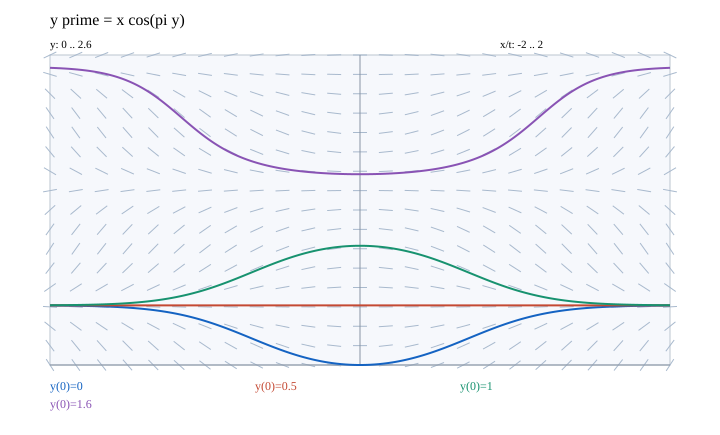

문제 요약
\(y'=x\cos(\pi y)\)의 (a) \(y(0)=0,0.5,1,1.6\)인 해를 그리고 (b) 모든 평형해를 구하라.

힌트. 우변으로 기울기를 계산하고 초기점에서 해를 추적한다.
해설.
영 입력에서는 기울기가 영이며, 오른쪽 반평면에서는 코사인의 부호를 따른다. 해들은 입력에 대해 대칭이다.
초기값 영과 일은 모두 높이 이분의 일로 접근한다. 초기값 이분의 일은 상수이고, 초기값 일점육은 높이 이점오로 접근한다.
최종 답. \(y\equiv n+1/2,\quad n\in\mathbb Z\); 초기값 곡선은 그림과 같다.
검산·주의점. 우변의 코사인이 영인 높이에서는 모든 입력에 대해 기울기가 영이다.
Problem summary
For \(y'=x\cos(\pi y)\), (a) plot the solutions with \(y(0)=0,0.5,1,1.6\) and (b) find all equilibria.
Hint. Compute slopes from the right-hand side and follow the solution from its initial point.
Solution.
Slopes vanish at zero input; to the right they follow the cosine sign. The solutions are even functions of the input.
The curves starting at zero and one approach height one half. The one-half solution is constant, and the curve starting at 1.6 approaches height 2.5.
Final answer. \(y\equiv n+1/2,\quad n\in\mathbb Z\); the initial-value curves are plotted.
Check and conditions. At each cosine zero the slope vanishes for every input.